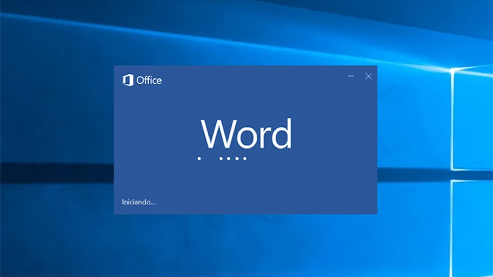
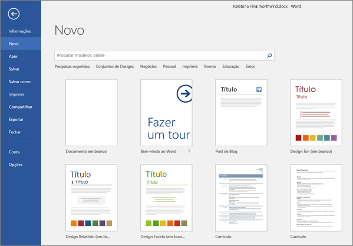
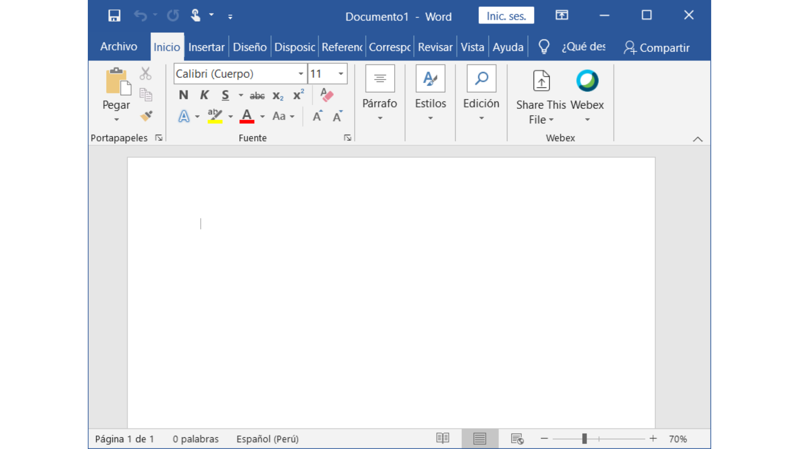
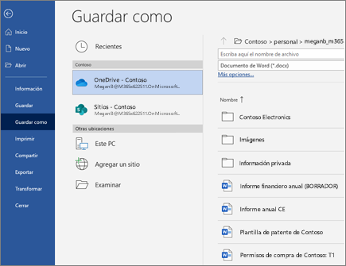
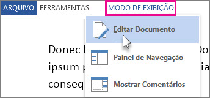
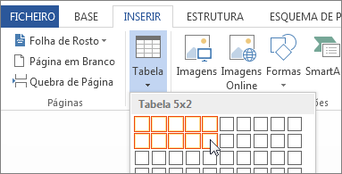
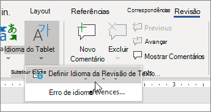
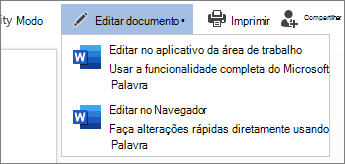
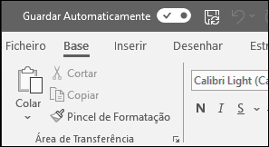

O Microsoft Word é uma ferramenta amplamente utilizada para a criação e edição de documentos de texto. Abaixo está um guia detalhado sobre como utilizar as suas principais funções:
Para abrir o Microsoft Word, procure o ícone do Word no seu ambiente de trabalho ou menu Iniciar e clique duas vezes nele. Alternativamente, também pode abrir o Word a partir da barra de pesquisa no Windows.
Depois de abrir o Word, pode criar um novo documento clicando em "Ficheiro" no canto superior esquerdo e depois em "Novo". Aqui pode escolher entre diferentes modelos ou selecionar "Documento em branco" para começar do zero.
Com um novo documento aberto, clique na área em branco e comece a digitar o texto desejado. O Word permite que você digite texto de maneira semelhante a qualquer editor de texto, e você pode usar as teclas do teclado para navegar pelo documento.
Selecione o texto que deseja formatar. Na guia "Página Inicial" na barra de ferramentas, você encontrará opções para alterar a fonte, o tamanho da fonte, a cor do texto, o estilo do texto (negrito, itálico, sublinhado), o alinhamento do texto e muito mais.
É fundamental guardar o seu trabalho regularmente para evitar perdas de dados. Clique em "Ficheiro" e selecione "Guardar como". Escolha a localização e o nome do ficheiro e depois clique em "Guardar". O Microsoft Word guarda por padrão os documentos em formato .docx.
Para editar o documento, basta clicar onde deseja fazer alterações e começar a escrever ou modificar o texto existente. Pode desfazer e refazer alterações utilizando os botões correspondentes na barra de ferramentas ou através dos atalhos de teclado (Ctrl + Z para desfazer e Ctrl + Y para refazer).
O Word oferece funções avançadas de formatação para melhorar a aparência dos seus documentos. Pode inserir elementos como tabelas, imagens, formas, gráficos, cabeçalhos e rodapés a partir das guias correspondentes na barra de ferramentas. Além disso, pode ajustar o layout da página, as margens e as colunas a partir do menu de layout de página.
Utilize as ferramentas de revisão do Word para corrigir erros ortográficos e gramaticais. Pode ativar a verificação ortográfica automática enquanto escreve ou revisar o documento completo depois de terminar. Além disso, o Word oferece a função de "Comentários" para deixar notas e sugestões a outros colaboradores.
Se estiver a trabalhar num documento com outros utilizadores, pode utilizar as funções de colaboração do Word. Isso inclui partilhar o documento através do OneDrive ou SharePoint, permitindo que outros vejam e editem o documento em tempo real. Também pode controlar quem tem acesso e as permissões de edição.
Para imprimir o documento, clique em "Ficheiro" e selecione "Imprimir". Ajuste as opções de impressão conforme necessário, como a impressora, a orientação do papel e a escala, e depois clique em "Imprimir". Também pode pré-visualizar o documento antes de imprimir para garantir que tudo esteja como deseja.
O Word oferece a função de guardado automático para evitar a perda de dados em caso de encerramento inesperado. Pode ajustar a frequência de guardado automático nas configurações. Além disso, o Word guarda automaticamente versões anteriores do seu documento, permitindo-lhe recuperar alterações ou versões anteriores, se necessário.
